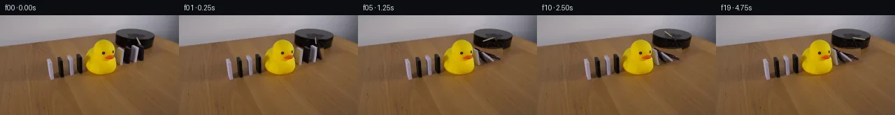

![首帧]()

Round 00
2026-11-05T01:20:13.705535+00:00像素候选变化代码 +273/−0inspection 更新
pixels 6801335d847886f8 · code 8af100da136df8a0
查看本轮 generate.py 真实 diff
--- previous/generate.py
+++ current/generate.py
@@ -0,0 +1,273 @@
+"""Local photograph continuation using pixel reconstruction and textured cuboids."""
+from pathlib import Path
+import math
+import numpy as np
+import cv2
+from PIL import Image, ImageDraw
+from scipy.ndimage import gaussian_filter
+from artifact_io import save
+
+ROOT=Path(__file__).resolve().parent
+S=4
+W,H=256,144
+src=np.asarray(Image.open(ROOT/'first_frame.png').convert('RGB'))
+source_hi=cv2.resize(src.astype(np.float32),(W*S,H*S),interpolation=cv2.INTER_CUBIC)
+
+def poly_mask(points,blur=0):
+ a=np.zeros((H*S,W*S),np.float32)
+ cv2.fillPoly(a,[np.rint(np.array(points)*S).astype(np.int32)],1,lineType=cv2.LINE_AA)
+ if blur:a=gaussian_filter(a,blur*S)
+ return a
+
+def blend(canvas,color,alpha):
+ return canvas*(1-alpha[...,None])+color*alpha[...,None]
+
+# Coordinates are fitted to the photographed faces, not taken from another scene.
+# Front-left bottom, depth vector, height vector, thickness along the line.
+blocks=[
+ dict(p=np.array([173.2,71.8]),d=np.array([-6.8,-3.4]),v=np.array([.8,-22.0]),w=3.0,white=True),
+ dict(p=np.array([184.8,68.8]),d=np.array([-7.2,-3.8]),v=np.array([.7,-22.4]),w=3.0,white=False),
+ dict(p=np.array([193.0,66.8]),d=np.array([-7.2,-3.6]),v=np.array([.5,-23.2]),w=3.0,white=True),
+ dict(p=np.array([202.7,64.3]),d=np.array([-7.0,-3.9]),v=np.array([.8,-21.4]),w=3.0,white=False),
+]
+E=np.array([1.,-.23])
+LH=26.0
+# Coordinates order: (line coordinate, front-to-back coordinate, height).
+faces={
+ 'left':[(0,0,0),(0,1,0),(0,1,1),(0,0,1)],
+ 'right':[(1,0,0),(1,0,1),(1,1,1),(1,1,0)],
+ 'front':[(0,0,0),(0,0,1),(1,0,1),(1,0,0)],
+ 'back':[(0,1,0),(1,1,0),(1,1,1),(0,1,1)],
+ 'top':[(0,0,1),(0,1,1),(1,1,1),(1,0,1)],
+}
+
+def point(b,local,angle):
+ x,y,z=local;x*=b['w']
+ c,s=math.cos(angle),math.sin(angle)
+ return b['p']+b['d']*y+E*(x*c-LH*z*s)+b['v']*(z*c+x/LH*s)
+
+def points(b,f,a):return np.array([point(b,p,a) for p in faces[f]],np.float32)
+
+corners=np.array([[0,0],[127,0],[127,127],[0,127]],np.float32)
+for b in blocks:
+ b['textures']={}
+ for face in ['left','front','top']:
+ q=points(b,face,0)
+ m=cv2.getPerspectiveTransform(q,corners)
+ tex=cv2.warpPerspective(src.astype(np.float32),m,(128,128),flags=cv2.INTER_LINEAR)
+ # Avoid copying the soft outline/background onto newly exposed faces.
+ tex=cv2.resize(tex[7:121,7:121],(128,128),interpolation=cv2.INTER_LINEAR)
+ b['textures'][face]=tex
+ b['textures']['right']=b['textures']['left'][:,::-1].copy()
+ b['textures']['back']=b['textures']['front'].copy()
+ silhouette=np.array([point(b,p,0) for p in [(0,0,0),(1,0,0),(1,0,1),(1,1,1),(0,1,1),(0,1,0)]])
+ # A soft silhouette includes the photographed antialiasing and local contact shadow.
+ m=poly_mask(silhouette)
+ m=cv2.dilate(m,np.ones((7,7),np.uint8))
+ b['original_mask']=gaussian_filter(m,.35*S)
+
+# Remove just the four moving blocks, then reconstruct the exposed table and
+# the small covered section of the black cylinder.
+remove=np.maximum.reduce([b['original_mask'] for b in blocks])
+# A generous lower shadow strip is part of the moving setup.
+shadow_remove=poly_mask([(164.5,67.0),(207.5,61.5),(210,68),(172,76)],.9)
+remove=np.maximum(remove,shadow_remove*.95)
+# Donor is table texture at the same x, 35 px toward the foreground.
+yy,xx=np.mgrid[0:H*S,0:W*S].astype(np.float32)
+donor=cv2.remap(source_hi,xx,np.minimum(yy+35*S,H*S-1),cv2.INTER_CUBIC)
+# Match low spatial frequency to surrounding wood, keeping its real grain.
+low=gaussian_filter(source_hi,(10*S,10*S,0))
+donor_low=gaussian_filter(donor,(10*S,10*S,0))
+donor=np.clip(donor+np.clip(low-donor_low,-12,12),0,255)
+background=blend(source_hi,donor,remove)
+
+# The cylinder's curved bottom edge is measured from intact photograph pixels.
+px=xx/S;py=yy/S
+bottom=38.7+10.0*np.sqrt(np.maximum(0,1-((px-192.2)/27.6)**2))
+platform_region=(px>164.6)&(px<219.8)&(py>=31.7)&(py<bottom)
… diff truncated; 186 more lines …